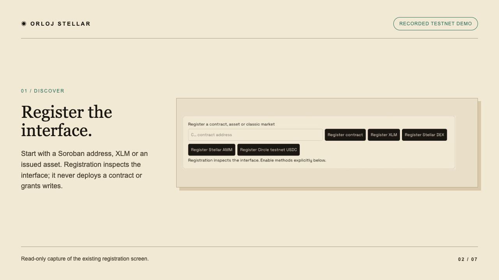

Keys stay private.
Freighter retains its keys. Separate managed wallets use encrypted key storage and an isolated signer. No wallet keys, credentials or signing payloads are published here.
Turn Stellar contract interfaces into typed MCP tools. Let an agent discover methods, validate a call and return a confirmed result—while wallet keys stay with the signer.
Watch the 70-second demoAn edited video walkthrough assembled from real application captures. Historical results, no new transaction. English captions; no audio.
Browse the actual captured screens. These controls navigate the walkthrough; they never operate a wallet.

Registration accepts a contract or asset and inspects its declared methods. It does not deploy a contract or authorize a write.
The transfer below was independently confirmed on Stellar Testnet. The showcase reuses that historical evidence; it does not submit anything.
6594046f583cea6e7f2ecbb686bec325a0d86018ba3547a8a32a1296ad9eed18The temporary unattended grant was removed. Testnet history can change after network resets; this is a dated acceptance snapshot.
Ranked by Stellar-specific DeFiLlama TVL on 25 October 2026. Overlapping products must not be summed as independent capital. Reads cover selected representative interfaces, not every contract or method.
| Entry | Verified scope / remaining limit |
|---|---|
| Blend Pools V2 | Testnet deposit and withdrawal confirmed; positions checked. |
| Stellar DeFi Hub | Selected vault reads passed; ownership attribution and writes unverified. |
| Aquarius Stellar | Testnet trustline and swap confirmed; output balance increased. |
| Upshift | Selected vault reads passed; official Testnet writes unverified. |
| Gami Labs | Selected vault reads passed; shares infrastructure with Upshift; writes unverified. |
| DeFindex | Testnet deposit and withdrawal confirmed; shares checked. |
| Sushi Stellar | Factory reads passed; swap/position writes unverified. |
| Stellar DEX | Classic adapter offer creation and cancellation confirmed. |
| Templar Protocol | Experimental proxy reads passed; production-TVL attribution and writes unverified. |
| Stellar AMM | Classic adapter pool deposit/withdrawal confirmed; reserves/shares checked. |
| DeFa by InvoiceMate | Rank 11 TVL logger: three Mainnet reads passed, 16 signatures supported. Not lending-pool write acceptance. |
Freighter retains its keys. Separate managed wallets use encrypted key storage and an isolated signer. No wallet keys, credentials or signing payloads are published here.
A supported schema does not grant an administrator role, create liquidity or guarantee a successful call. Unsupported signatures are excluded explicitly.
Provider quotas can interrupt chat. Durable status remains the source of truth; a failed conversation must never silently repeat a payment.
This Vercel site hosts only a video, captures and curated evidence. It has no login, wallet connection, live model, contract endpoint or hosted backend.